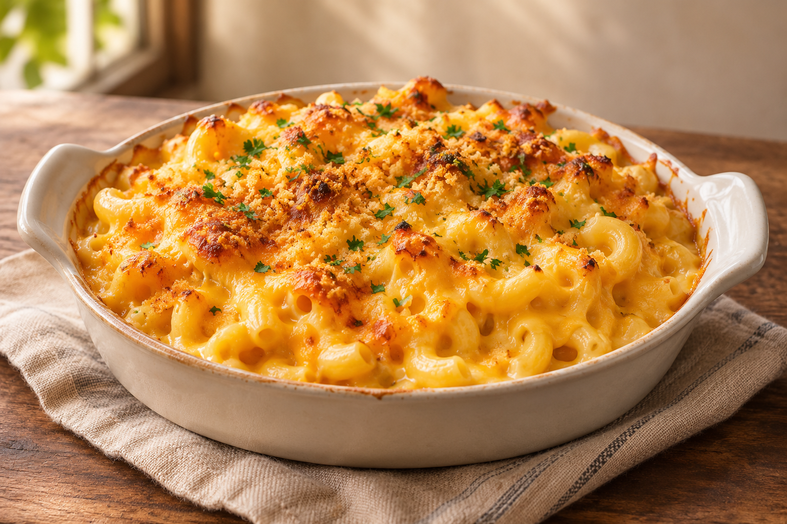

Mac and Cheese

Description
Treat yourself to our ultimate comfort food: tender elbow macaroni smothered in a rich, velvety cheese sauce. Baked until golden and bubbly with a lightly crispy topping, our mac and cheese delivers the perfect combination of creamy, cheesy goodness and satisfying texture in every bite.
Ingredients
- 2 cups elbow macaroni (dry)
- 2 cups shredded cheddar cheese
- 2 cups milk
- 2 tablespoons butter
- 2 tablespoons all-purpose flour
- Salt and pepper
- Breadcrumbs (optional)
Steps
- Cook the pasta: Boil macaroni in salted water until al dente. Drain and set aside.
- Make the cheese sauce: Melt butter in a saucepan, stir in flour, and cook for 1 minute. Gradually whisk in milk until thickened.
- Add cheese: Stir in shredded cheddar until melted and smooth. Season with salt and pepper.
- Combine: Mix the cooked macaroni with the cheese sauce.
- Bake: Transfer to a baking dish, sprinkle with extra cheese and breadcrumbs, and bake at 350°F (175°C) for 20–25 minutes until golden and bubbly.
Back